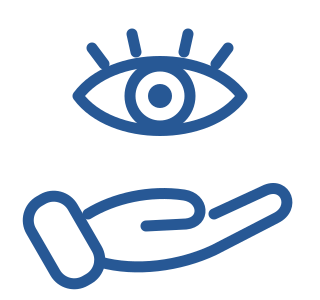
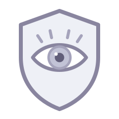
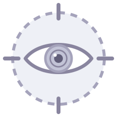
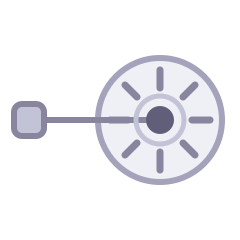
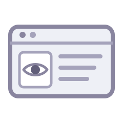

Unsere Leistungen
Viele Augenerkrankungen entwickeln sich langsam und bleiben lange unbemerkt. Mit gründlichen Untersuchungen und moderner Messtechnik lassen sich Veränderungen oft schon erkennen, bevor sie Beschwerden machen – so kann eine Behandlung rechtzeitig beginnen.
Hier finden Sie unser Leistungsspektrum in fünf Bereichen – von der Vorsorge bis zur Hilfe im Notfall.

Vorsorge und Basisuntersuchung

Die Grundlage jeder augenärztlichen Betreuung: sorgfältige Untersuchungen, die Veränderungen früh sichtbar machen – auch dann, wenn Sie selbst noch nichts bemerken.
- Bestimmung der Sehschärfe und der Brillenwerte (Refraktion), einschließlich Brillenverordnung
- Messung des Augeninnendrucks (Tonometrie)
- Prüfung des Farbsehens mit Ishihara-Tafeln
- Prüfung des zentralen Gesichtsfelds – der inneren 10 Grad – mit dem Amsler-Gitter
- Test des räumlichen Sehens mit Lang-Test und Titmus-Test
- Untersuchung der vorderen Augenabschnitte
- Spiegelung des Augenhintergrunds (Funduskopie)
- Beurteilung des Sehnervenkopfs (Papille) und der Nervenfaserschicht
- Früherkennung des grünen Stars (Glaukom-Vorsorge)
- Voruntersuchung beim grauen Star (Katarakt)
- Früherkennung und Behandlung der altersabhängigen Makuladegeneration (AMD)
- Augenuntersuchung bei Bluthochdruck, Diabetes und nach Gefäßverschlüssen
- Fachübergreifende Mitbetreuung bei Schilddrüsenerkrankungen mit Augenbeteiligung (endokrine Orbitopathie)
- Regelmäßige Kontrollen bei rheumatischen Erkrankungen (Uveitis)
- Neuroophthalmologische Abklärung, etwa bei Pupillenstörungen, Doppelbildern oder Erkrankungen des Sehnervs
- Untersuchung bei schmerzenden, geröteten oder juckenden Augen
- Behandlung trockener Augen
- Behandlung entzündeter Lider und Lidränder
- Entfernen von Fremdkörpern aus dem Auge
Apparative Diagnostik

Moderne Messverfahren liefern genaue Werte zu Hornhaut, Netzhaut, Sehnerv und Gesichtsfeld. Sie ergänzen die Untersuchung und helfen, Veränderungen im Verlauf zu beurteilen.
- Automatische Messung der Brechkraft (Autorefraktometrie)
- Augendruckmessung berührungslos sowie durch Applanation nach Goldmann (Tonometrie)
- Optische Kohärenztomographie (OCT)
- Laser-Scanning-Polarimetrie (GDx)
- Bestimmung der Hornhautdicke (Pachymetrie)
- Beurteilung des Kammerwinkels (Gonioskopie)
- Untersuchung des Gesichtsfelds (Perimetrie)
- Test von Dämmerungssehen und Blendempfindlichkeit (Nyktometrie)
- Untersuchung des Tränenfilms, etwa bei trockenem Auge (Sicca-Syndrom)
- Messung von Pupillenweite und Pupillenreaktion sowie Prüfung von Kontrast- und Farbsehen
- Messung, wie weit die Augen hervortreten (Exophthalmometrie nach Hertel)
Laserbehandlung beim Nachstar

Nach einer Operation des grauen Stars kann sich die hintere Linsenkapsel eintrüben – man spricht vom Nachstar. Diese Trübung lässt sich mit dem YAG-Laser ambulant behandeln.
- Untersuchung auf Nachstar, also eine Trübung der hinteren Linsenkapsel nach einer Operation des grauen Stars
- Aufklärungsgespräch zur YAG-Kapsulotomie: Ablauf, Nutzen und mögliche Risiken
- Vorbereitung des Auges, zum Beispiel mit pupillenerweiternden Tropfen, sofern nötig
- YAG-Kapsulotomie: behutsame Öffnung der getrübten hinteren Kapsel mit dem Laser, um das Sehen wieder zu verbessern
- Kontrolle direkt nach dem Eingriff, einschließlich Messung des Augeninnendrucks
- Falls erforderlich: zeitnahe Nachuntersuchung und vorbeugende Behandlung gegen Entzündungen
Führerscheingutachten

Verlangt die Fahrerlaubnisbehörde einen augenärztlichen Nachweis, prüfen wir alle dafür nötigen Sehfunktionen und stellen die Bescheinigung aus.
- Prüfung der Sehschärfe in Ferne und Nähe
- Orientierende Untersuchung des Gesichtsfelds
- Farbsehtest mit Ishihara-Tafeln
- Test des räumlichen Sehens (Stereotest)
- Bei Bedarf: Messung von Dämmerungssehen und Blendempfindlichkeit (Nyktometrie)
- Augenärztliche Beurteilung nach den Vorgaben der Fahrerlaubnis-Verordnung (FeV)
- Ausstellen der Bescheinigung zur Vorlage bei der Führerscheinstelle
Notfälle
Bei diesen Beschwerden sollten Sie nicht abwarten. Rufen Sie uns während der Sprechzeiten bitte sofort an. Außerhalb der Sprechzeiten erreichen Sie den ärztlichen Bereitschaftsdienst unter 116 117, bei Lebensgefahr den Notruf 112.
- Praxis, während der Sprechzeiten
- 04621 / 2 23 50
- Ärztlicher Bereitschaftsdienst
- 116 117
- Notruf bei Lebensgefahr
- 112
- Plötzlich schlechteres Sehen oder ein unvermittelter Ausfall im Gesichtsfeld
- Heftige Schmerzen im Auge oder in der Augenhöhle
- Neu auftretende Lichtblitze, „Rußregen“ oder plötzlich viele schwebende Punkte (Mouches volantes)
- Plötzlich gerötetes Auge mit Lichtempfindlichkeit oder starkem Tränenfluss
- Anzeichen eines akuten Glaukomanfalls: hartes, schmerzendes Auge und farbige Ringe um Lichtquellen (Halos)
- Fremdkörper im Auge, zum Beispiel Metallsplitter, Staub oder Holzteilchen
- Verätzungen: sofort gründlich mit Wasser spülen, danach umgehend ärztlich vorstellen
- Prellungen und stumpfe Verletzungen von Auge oder Augenhöhle
- Verletzungen durch spitze oder scharfe Gegenstände, auch bei Verdacht auf eine durchbohrende Verletzung – bitte sofort abklären lassen
- Akute Entzündungen der Hornhaut, der Regenbogenhaut (Uveitis) oder des Lidrands

Plessenstraße 13, 24837 Schleswig
Die Karte stammt von Google Maps und wird erst geladen, wenn Sie auf „Karte laden“ klicken. Mit dem Klick willigen Sie ein, dass Ihre IP-Adresse an Google übertragen wird. Mehr dazu in der Datenschutzerklärung.
Plessenstraße 13, 24837 Schleswig Karte bei Google Maps öffnen Kartendaten © Google Maps